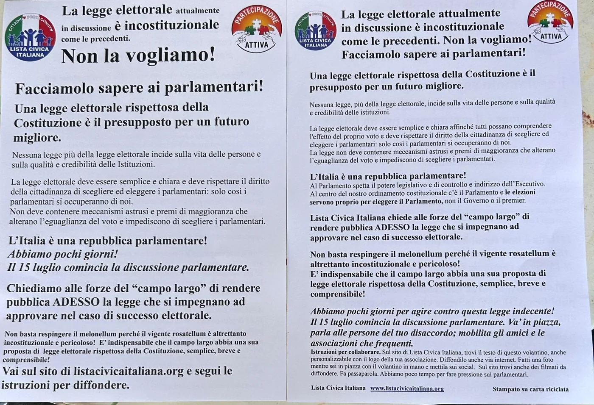

Oggi, martedì 14 luglio, la Camera comincia a votare la nuova legge elettorale. Il centrodestra la chiama Stabilicum. Le opposizioni la chiamano Melonellum.
Stasera Partecipazione Attiva sarà in piazza Montecitorio, insieme ad altre associazioni e movimenti, per la Notte della Democrazia.
Dalle 18, punto stampa. A seguire, veglia con talk, musica e flash mob.
Il nostro portavoce Luigi Spanu sarà presente con i volantini del movimento, per riprendere la manifestazione e rilasciare interviste.

Perché ci siamo
Non è una questione di schieramento. È una questione di chi tiene la penna.
Questa mattina abbiamo pubblicato l’analisi di cosa la Camera sta davvero votando: una preferenza che, nella maggior parte dei collegi, non sposterebbe nulla, perché il seggio andrebbe comunque al capolista scelto dalla segreteria.
La preferenza che non ti fa scegliere
Ma il problema non è solo quello.
Un premierato mascherato da legge elettorale
Le liste dovranno indicare, al momento del deposito del contrassegno, il nome del candidato Presidente del Consiglio. Non è una legge elettorale: è una modifica di fatto della forma di governo, ottenuta senza passare da una riforma costituzionale — e quindi senza il referendum che la Costituzione prevede.
L’articolo 92 della Costituzione affida al Presidente della Repubblica la nomina del Presidente del Consiglio. Indicare il premier sulla scheda comprime quella prerogativa senza dirlo apertamente.
Liste bloccate
Il cittadino vota un simbolo. I nomi li hanno già scelti le segreterie.
È esattamente il meccanismo che la Corte Costituzionale, con la sentenza 1/2014, dichiarò illegittimo per il Porcellum:
“coartano la libertà di scelta degli elettori nell’elezione dei propri rappresentanti in Parlamento” — Corte Costituzionale, sentenza n. 1/2014
Dodici anni dopo, siamo ancora qui.
Chi c’è già dentro, ci resta più facilmente
Un emendamento esenta dalla raccolta firme i partiti che a dicembre 2025 avevano un gruppo parlamentare. Chi è nato dopo, o viene da fuori, le firme le raccoglie — e in Italia il numero richiesto è tra i più alti d’Europa.
Una legge elettorale scritta da chi è in Parlamento, che rende più facile restarci a chi c’è già.
Il voto ai fuorisede, all’ultimo momento
Circa cinque milioni di elettori vivono lontano dalla residenza per studio, lavoro o cura. Per votare devono pagarsi un viaggio: il 5% degli elettori affronta oltre quattro ore tra andata e ritorno. L’Italia è l’unico grande Paese europeo senza una legge stabile sul voto fuorisede.
L’emendamento della maggioranza è arrivato all’ultimo momento, dopo essere stato assente dalle versioni precedenti. Ed è scritto in modo così rigido — dicono le opposizioni — da rischiare di non funzionare davvero.
Su questo varrebbe la pena litigare. Invece si litiga su una preferenza che non fa scegliere.
Non basta dire no
E qui va detta una cosa che non farà piacere a nessuno.
Respingere il Melonellum non basta. Perché il Rosatellum oggi in vigore è altrettanto incostituzionale, e altrettanto pericoloso: le liste bloccate ci sono già, il voto congiunto pure, le pluricandidature anche.
Se domani il Melonellum cadesse, torneremmo a votare con una legge che nega esattamente le stesse cose.
Per questo, insieme a Lista Civica Italiana, chiediamo alle forze del cosiddetto campo largo di rendere pubblica adesso la legge elettorale che si impegnano ad approvare in caso di vittoria.
Non dopo il voto. Adesso.
Perché una legge elettorale rispettosa della Costituzione — semplice, breve, comprensibile — è il presupposto di tutto il resto. E chi chiede il voto dei cittadini contro una legge che toglie loro la scelta, ha il dovere di dire con quale legge intende restituirgliela.

Se non puoi venire a Roma
C’è comunque una cosa che puoi fare, e servono lo SPID e cinque minuti.
Tre proposte di legge di iniziativa popolare, depositate dall’associazione Voto LibEguale, chiedono esattamente ciò che manca: preferenze vere su nomi prestampati, primarie per tutti i candidati, abolizione delle pluricandidature e del voto congiunto.
L’articolo 74 del Regolamento del Senato obbliga a calendarizzarle entro tre mesi. Se le firme arrivassero adesso, l’esame cadrebbe mentre lo Stabilicum è al Senato.
Si firma su votolibeguale.it
Martedì 14 luglio, dalle 18.00
Roma, Piazza Montecitorio
Punto stampa, veglia, talk, musica, flash mob
Ti occupi di questo tema? Mettiti sulla mappa e trova chi se ne occupa vicino a te.
🗺️ Vai alla Mappa